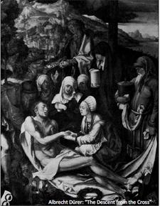

Ruhsal Devrim
Ruhsal üçgen yavaşça ileri ve yukarı doğru ilerler. Bugün aşağıdaki bölümlerin en büyüklerinden biri, materyalist sloganlar atma noktasına ulaşmıştır. Bu bölümdekiler farklı mezheplerde toplaşmışlardır. Kendilerine Musevi, Katolik, Protestan vs derler. Oysa aslında ateistlerdir ve bunu yalnızca gözüpek ya da dar görüşlü birkaçı açıkça söyleyebilir. “Cennet bomboş”, “Tanrı öldü.” Siyasette demokrat ve cumhuriyetçidirler. Dün bu siyasal düşüncelerin kendilerinde uyandırmış olduğu korku, nefret ve dehşeti bugün ürkütücü adından başka hakkında hiçbir şey bilmedikleri anarşizme yöneltmişlerdir.
Ekonomide sosyalisttirler. Kapitalizm belasını haklamak ve kötülüğün kellesini uçurmak üzere adalet kılıcını bilerler.
Üçgenin bu büyük bölümünde bulunanlar, bir sorunu asla kendi başlarına çözmeyip, fedakâr ve yüce gönüllü yoldaşları tarafından, bir yük arabasındaymışçasına sürüklendiklerinden, yaşamın, uzaktan izledikleri esas gücü hakkında hiçbir şey bilmezler.
Hemen aşağı bölümdeki adamlar, az önce bahsi geçen diğerleri tarafından yavaşça yukarı çekilirler. Ama bilinmezden ve ihanetten korkularından emektar koltuklarına sıkıca sarılırlar.
Daha yukarı bölümdekiler, kör ateistlerdir; bir de kendilerini haklı çıkarmaya çalışır, -bir bilgine yakışmayacak şekilde “Pek çok cesedin içini açtım, oysa henüz hiçbirinde ruha rastlamadım,” diyen Virchow gibi tuhaf laflar ederler.
Genellikle cumhuriyetçidirler, farklı parlamento usullerini bilirler. Gazetelerin politika başyazılarını okurlar. Ekonomide farklı derecelerde sosyalisttirler. Schweitzerin Emmasından Lasallein Ücretlerin Tunç Yasasına, oradan Marxın Kapitaline ve başka kaynaklara geçerek, ilkelerini destekleyecek sayısız alıntı bulabilirler.
Bu yüksek bölümlerde, daha önce anlatılan bölümlerde bulunmayan başka düşünüş biçimleri ve fikirler belirir: Bilim ve sanat, sanat deyince tabii nihayet edebiyat ve müzik.
Bilimde, yalnızca tartılıp ölçülebilen şeylere itibar eden pozitivistlerdir. Başka her şeyi değersiz saçmalık sayarlar. Oysa dün de bugün kanıtlanmış saydıkları kuramları saçma bulmuşlardı.
Sanatta natüralisttirler. Sanatçının kişiliğine, bireyselliğine ve mizacına bir noktaya kadar değer verirler. Başkaları tarafından belirlenmiş olan bu sınırı sorgulamaksızın kabul ederler.
Ayrıcalıklı güvenliklerine ve şaşmaz ilkelerine rağmen, üçgenin bu yukarı bölümlerinde sinsi bir korku, endişe ve güvensizlik duygusu pusudadır. Bu ise onların daha önceki deneyimlerinden kaynaklanmaktadır. Çünkü bilirler ki bugün bilge, devlet adamı ya da sanatçı olarak saygı gösterdikleri insanlar, dün dolandırıcı ya da şarlatan diye aşağılanıyordu. Bölümün üçgendeki yeri ne kadar yukarıdaysa, korku ve güvensizlik o kadar büyüktür. İnsanların görebilen gözleri ve gördüklerini arasında ilişki kurabilen zihinleri var. Kendilerine şöyle sorarlar: “Önceki günün bilimi dün reddedildiyse ve dünün bilimi bugün bizlerce kabul edilmiyorsa, bugün bilim dediğimiz şeyin yarın geçersiz olması mümkün değil mi?” En cesurları da “Mümkündür,” diye yanıt verir soruya.
Sonra, bazıları bugünkü bilimin henüz açıklamadığı problemleri fark eder ve kendilerine sorarlar: “Eğer bilim, bunca zamandır izlediği yolda devam ederse, bir gün bu problemlerin çözümlerine ulaşabilecek mi? Ve eğer ulaşırsa, insanlık bu çözümlere güvenebilecek mi?” Bu bölümlerde, günümüzde akademilerce sağlam temellere dayalı olduğu kabul edilen olguların, bir zamanlar aynı akademilerce küçümsendiğini hatırlayan akademisyenler de vardır. İçlerinde, dün saçma olmakla suçlanan sanat hakkında, bugün derin kitaplar yazan estetik profesörleri de vardır. Böyle kitaplar yazarak, sanatın aştığı engelleri temizleyip, yerlerine yeni engeller dikip dururlar. Engelleri, sanatın önüne değil arkasına diktiklerini fark etmezler. Fark ederlerse, hemen yeni kitaplar yazar, engelleri aceleyle biraz öteye çekerler. Bu gösteri, estetiğin en ileri ilkesinin bile gelecek için değil yalnızca geçmiş için değerli olabileceği fark edilinceye dek sürüp gider. Bu tür kuram ve ilkeler daha ötedeki, yani maddi olmayan dünyadaki şeyler için geçerli olamaz. Maddi bir varlığı olmayan şey, maddi bir sınıflandırmaya tabi tutulamaz. Geleceğin ruhu yalnızca sezgiyle tasavvur edilebilir ve bu sezgiye ulaşmada tek yol sanatçının yeteneğidir. Kuram, dünün ve uzak geçmişin taşlaşmış düşüncelerine ışık saçan lambadır.[11] Üçgende daha yukarılara çıkıldıkça huzursuzluk artar, en doğru mimari plana göre inşa edilmiş şehir bile doğanın kontrol edilmez gücüyle birdenbire sarsılabilir. İnsanlık böyle ruhsal bir şehirde yaşamakta ve ne mimarların ne de matematikçilerin öngörebildiği ani karışıklıklara maruz kalmaktadır. Bir yanda, kağıttan bir ev gibi parçalara ayrılmış heybetli bir duvar vardır, bir diğer yandaysa bir zamanlar cennete uzanmış olan ve muhtemelen pek çok ölümsüz ruhsal sütun üzerine inşa edilmiş büyük kulenin yıkıntıları. Issız mezarlık sarsılır, unutulmuş mezarlar açılır ve unutulmuş hayaletler ortaya çıkar. Güneşe leke düşer ve etraf kararır. Hangi kuram karanlıkla savaşabilir? Bu şehirde, yanlış bilgilerle kulakları tıkanmış, hiç bir çatırtıyı duyamayan adamlar yaşar. Gözleri yanlış bilgilerle körleşmiş bu adamlar şöyle derler: “Güneşimiz her zamankinden parlak olacak, çok yakında üstünde leke kalmayacak.” Ama bir gün bu adamlar bile görüp anlayacaklar.
Oysa daha yukarılarda bu şaşkınlık yoktur, insanlığın diktiği sütunlara karşı gözüpek bir saldırı süregider. Orada tekrar tekrar deneyen, hiçbir sorun karşısında titremeyen ve temel addedilmiş olgulara şüpheyle bakan başka bilim insanları vardır. Evrenin temelleri yerinden oynatılmaktadır. Her gün yeni bir kuramın gözüpek kâşifleri ortaya çıkar ve kendilerini hiçe sayıp, umutsuzca yeni bir zirve fethetmeye ya da koca bir kaleyi yıkmaya çalışan savaşçılara katılırlar. Çünkü “insanın aşamayacağı sur yoktur.”
Dünün biliminin dolandırıcılık diye adlandırdığı olgular bugün kanıtlanıyor. Çoğu, maddi başarıların ve ayaktakımının şakşakçı hizmetkârı olan ve her rüzgâra yelken açan gazeteler bile, bilimin mucizelerine dair söylediklerini düzeltmek, hatta tümden bir kenara atmak zorunda kalıyorlar. İçlerinde aşırı materyalistlerin de bulunduğu pek çok bilim insanı, kendilerini, artık yalanlarla ya da suskunlukla geçiştirilemeyecek problemleri bilimsel bir şekilde incelemeye adıyorlar.[12]
Öte yandan, materyalist bilim, madde olmayanla veya zihinlerin kavrayamadığı konularla uğraştığı zaman, bilimin yöntemlerinden kuşku duyanların sayısı da artıyor. Sanatın Primitiflere başvurması gibi, bu adamlar da unutulmuş yöntemlerden destek alabilmek için neredeyse unuttuğumuz zamanlara dönüyorlar. Oysa bu yöntemler hala canlı ve çokbilmişliğimizle merhamet duyup küçümsemeyle baktığımız halklar tarafından kullanılıyorlar. Bu kültürlerden biri de, uygarlığımızın bilgili kişilerinin görmezden geldiği ya da yüzeysel açıklama ve sözcüklerle geçiştirdiği problemleri zaman zaman karşımıza çıkaran Hindistan.[13] Hindistanda uzun yıllar yaşamış olan Madam Blavatsky, bu vahşilerle uygarlığımız arasında bir bağlantı görebilmiş ilk kişidir. O zamandan beri, bugün pek çok insanın dâhil olduğu ve Teosofik Toplulukla somut bir forma kavuşmuş olan muazzam bir ruhsal hareket başlamıştır. Bu toplulukta, ruh sorununa içsel bilgiyle yaklaşmaya çalışan gruplar bulunmaktadır. Blavatsky, harekete temel oluşturan teosofi kuramını, sorulu cevaplı bir öğrenme biçiminde sunmuştur.[14] Blavatskyye göre teosofi, ölümsüz gerçekle eşanlamlıdır. “Gerçeğin meşalesinin yeni taşıyıcısı, insanların zihinlerini hazır bulacak; getirdiği yeni gerçekleri anlatacak bir dil ve maddi engel ve güçlükleri yolundan temizleyen bir düzen onu bekliyor.” Blavatsky, “yirmi birinci yüzyılda dünya günümüze kıyasla cennet olacaktır,” demektedir, kitabı da bu sözlerle sona erer.
Din, bilim ve ahlak -son ikisi Nietzschenin güçlü elleriyle- sarsıldığında ve onları besleyen dayanaklar yıkılmaya başladığında, insan dışarıyı bırakıp gözünü kendisine çevirir oldu. Edebiyat, müzik ve resim bu ruhsal devrimin ilk hissedildiği alanlardır; şimdinin karanlığını gösterir ve başlangıçta pek az kişinin zayıf bir ışık olarak gördüğü, çoğunluğunsa fark etmediği şeyin önemine işaret ederler. Belki gün gelecek onlar da kararacaklar, ama şimdi ruhsuz yaşantıyı bırakıyor ve ruhun maddi olmayan uğraşlarına imkân verecek esas ve düşüncelere yöneliyorlar.
Edebiyat dünyasında bu tür bir şairlerden biri Maeterlincktir. Bizi, doğru ya da yanlış bir şekilde doğaüstü dediğimiz bir dünyaya götürür. Prenses Maleine, Yedi Prenses, Körler vs, Shakespearein kahramanları gibi eski zaman insanları değildir. Onlar, bulutların arasında kaybolmuş, ölümle burun buruna, görünmez ve karanlık güçlerin tehdidi altında ruhlardır.
Ruhsal karanlık, bilinmeyenin verdiği güvensizlik ve korku tüm dünyalarını kaplamıştır. Maeterlinck belki de ilk peygamberlerden, sanattaki ilk reformculardan, yukarıda anlatılan düşüşün sonunu haber veren ilk kâhinlerdendir. Ruhsal atmosferin kasveti, her şeyin yetkesindeki korkunç bir el, müthiş bir korku, yoldan çıkmışlık hissi, neyin kılavuzluk edeceğine dair bir bocalama eserlerinde açıkça görülür.[15]
Maeterlinck bu atmosferi tamamen sanatsal vasıtalarla yaratmaktadır. Kullandığı maddi malzeme (karanlık dağlar, ay ışığı, bataklıklar, rüzgâr, baykuş sesleri vs) sembolik bir rol oynamakta ve iç sesin sunulmasına yardımcı olmaktadır.[16] Maeterlinckin başlıca silahı sözcükleri kullanış biçimidir. Sözcük içsel armoniyi ifade edebilir. İçsel armoni, kısmen ya da belki çoğunlukla, dillendirdiği nesneden doğar. Ama nesnenin kendisi görülmeyip adı işitildiğinde, işitenin zihni yalnızca soyut bir izlenim elde etmektedir. Yani nesne, madde olmaktan çıkar ve kalpte kendisine özgü bir titreşim oluşturur.
Sözcüğün yerinde kullanılması ve iki üç kez, hatta şiirin ihtiyacına göre daha da sık tekrarlanması, içsel armoniye hizmet ettiği gibi sözcüğün bilinmeyen ruhsal özelliklerini de gün ışığına çıkartır. Bunun da ötesinde, sıkça tekrar edilmesi (yine çocukların çok sevdiği, oysa sonraki yıllarda unutulan bir oyun) sözcüğü asıl ve dışsal anlamından ayırır. Benzer şekilde resimde de, çizilen nesnenin verdiği soyut mesaj unutulabilir ve anlamını yitirebilir. Bazen belki de bilinçsiz bir şekilde, bu esas armoni, nesnenin somut ya da soyut anlamıyla birlikte algılanır. Ama ikinci durumda armoni ruhu doğrudan etkiler. Ruh, belirli bir nesneyle ilişkili olmayan, daha karmaşık bir hisse kapılır; zil sesinden ya da yaylı çalgılardan çok daha etkili hisler yaratılmıştır. Bu yol, geleceğin edebiyatına muazzam olanaklar sunmaktadır. Sözcükler –bu güç-, Serre Chaudesda[17] gelişmemiş bir şekilde kullanıldı. İlk başta belirli bir izlenim bırakmayan sözcükler, Maeterlinckin kullanım şekli sayesinde çok ince bir değere kavuşuyorlar. Saç gibi bilindik bir sözcük bile, belirli bir biçimde kullanıldığı takdirde, keder ve umutsuzluk atmosferini pekiştirebilir. Maeterlinckin yöntemi budur. Sanatçı, gök gürültüsü, şimşek ya da bulutlar ardındaki ayın, sahnede doğada yarattıklarından çok daha büyük bir dehşet yaratabilecek şekilde kullanılabileceğini göstermektedir.
Gerçek içsel güçler, kuvvetlerini ya da etkilerini böyle kolayca kaybetmezler.[18] Doğrudan ve dolaylı olmak üzere iki anlama sahip olan sözcük, şiirin ve edebiyatın saf malzemesidir, bu malzemeyi yalnızca bu sanatlar dönüştürebilirler ve onunla ruha hitap ederler.
Benzer bir duruma Wagnerin müziğinde de rastlanabilir. Kendisi, teatral yöntemler ya da ışık yerine ünlü leitmotiv yöntemiyle karakterlerine kişilik katmaya çalışmaktadır. Bu kadar belirgin bir motif kullanmak katışıksız bir müzikal yöntemdir. Müzikle, kahramandan önce gelen ve kahramanın havasını uzaktan yayan ruhsal bir atmosfer yaratılır.[19] Debussy gibi modern müzisyenler, çoğunlukla doğadan alınmış, fakat tamamen müzikal bir forma sokulmuş ruhsal bir izlenim yaratırlar. Debussy, doğal fenomenleri sanatı için kullanması bakımından İzlenimci ressamlarla benzerlik taşıdığı için, çoğu zaman bu ressamlarla birlikte anılır. Doğru olsun olmasın, bu benzetme, günümüzde farklı sanat dallarının birbirleriyle sıkça alışverişe girdiklerini ve benzerlikler taşıdıklarını vurgulamaktadır. Ancak Debussynin öneminin bundan ibaret olduğunu söylemek acelecilik olur. İzlenimcilerle benzerliğine rağmen bu müzisyen, ruhsal armoniyle yakından ilgilenmektedir ve eserlerinde günümüzün acı ve eziyetleri duyulur. Dahası, Debussy program-müziğinin temel özelliği olan bütünüyle maddi sesi asla kullanmaz ve daha soyut bir izlenim yaratmaya çalışır.
Debussy, Rus müziğinden, bilhassa da Mussorgskyden çok etkilenmiştir. O yüzden Scriabinin başlarını çektiği genç Rus müzisyenlerle yakın ilişki içinde olması şaşırtıcı değildir. Bu iki müzisyenin eserlerinin icraları dinleyiciye çoğu zaman benzer deneyimler yaşatır. Dinleyici, oldukça ani bir biçimde, bir dizi modern akortsuzluktan az çok geleneksel bir güzelliğe geçiverir. İçsel ve dışsal güzellik arasında bir o yana bir bu yana giden bir tenis topuna dönebilir ve çoğu zaman kendisi aptal gibi hisseder. İçsel güzellik, alışık olmayanlara çirkinlik gibi gelir, çünkü insanlar genelde dışsal güzellikten yanadırlar ve içsel güzelliğe dair bir şey bilmezler. Avusturyalı besteci Arnold Schönberg, geleneksel güzellikten ayrılma konusunda neredeyse tektir. Harmonielehrede: “Sesler türlü türlü bir araya getirilebilir ve geliştirilebilir, ama beni belirli bir disonansı kullanmaya iten belirli kural ve koşullar olduğunu fark etmeye başladım,” demektedir.[20]
Demek ki Schönberg en büyük özgürlüğün, yani engelsiz bir sanattaki özgürlüğün bile mutlak olmadığını farketmiştir. Her çağ ancak belirli ölçüde özgürdür; en kudretli dahi bile bu sınırların ötesine geçemez. Schönberg özgürlüğünden olabildiğince yararlanmaya çalışıyor. Ruhsal armoni arayışında çoktan yeni güzellik kaynakları buldu. Onun müziği bizi, müzik deneyiminin kulak değil ruh meselesi olduğu bir dünyaya taşır; geleceğin müziği de bu noktada başlar.
İzlenimci hareket de resimde benzer bir yol izlemiştir. En dogmatik ve natüralist formlarına Neo-izlenimcilik adı verilen yaklaşımda rastlanır. Temel fikir, doğanın yalnızca seçilmiş bir yönünü değil, tüm parıltısını ve harikuladeliğini tuvale aktarmaktır.
Resimde, neredeyse aynı döneme ait ancak tamamen farklı üç grup görmek ilginç. Bunlar, (1) Rossetti, öğrencisi Burne-Jones ve takipçileri, (2) Böcklin ve okulu, (3) Segantini ve peşindeki değersiz fotoğraf sanatçıları.
Bu üç grubu, sanatta soyut arayışını örneklemek üzere seçtim. Rossetti, Prerafaelitlerin soyut üslubunu yeniden canlandırmaya çalışır. Böcklin, mitolojik sahnelerle uğraşmış, fakat Rosettinin aksine, efsanevi kahramanlarına maddi bir form vermiştir. İçlerinde en maddeci olan gibi görünen Segantini, iyice sıradan nesneler (tepeler, taşlar, sığırlar vs) seçip, onları gerçekçi bir şekilde resmetmiştir. Ancak maddi bir değerin yanı sıra ruhsal bir değer oluşturmaktan geri kalmamıştır; bu nedenle aslında içlerinde maddecilikten en uzak olan odur.
Bu adamlar, dışsal olanın yoluyla, içsel olanı aramışlardır.
Yeni bir form anlayışı arayışındaki başka biri ise aynı soruna başka, büsbütün sanatsal bir yoldan yaklaşmıştır. Cézanne bir çay fincanını canlı bir şeye çevirdi ya da ona can kattı. Natürmortu öyle bir noktaya getirdi ki, resim cansız olmaktan çıktı.
Şeylerin içindeki yaşantıyı hissedebildiğinden, bu şeyleri sanki insanları resmediyormuşçasına resmetti. Kullandığı renk ve formlar da ruhsal armoniye uygundur. Adamlar, ağaçlar, elmalar, Cézanne bunları içsel ve sanatsal bir armoni parçası yaratmak için kullanmıştır. Genç Fransızların ustalarından olan Henri Matissein eserlerinde de aynı amaç işlerliktedir. Matisse resimler yapar ve bu resimlerde ilahi olanı yeniden ortaya çıkarmaya çalışır.[21] Bu amaca ulaşmak için, resmettiği nesneden (insan ya da her neyse) başka bir çıkış noktasına ve resme özgü yöntemlerden, yani renk ve formdan başka bir şeye ihtiyacı yoktur.
Matisse, Fransız ve çok yetenekli bir renkçi olmasının verdiği imkânla, rengi iyice vurgular. Debussy gibi o da, geleneksel güzellikten her zaman uzak kalamaz, kanında İzlenimcilik vardır. Matissein içsel ihtiyacın etkisiyle yapılmış, muazzam bir içsel canlılığa sahip resimleri de vardır, dışsal bir istek doğrultusunda yapılmış ve yalnızca dışsal bir çekiciliğe sahip resimleri de (Bu bakımdan Manetyi anımsatır). Tipik Fransız resmi sayılabilecek eserleri, bulutları delip geçen koca bir dağın zirvesinden yükselen zarif bir melodi hissi verir.
Oysa Paristeki bir diğer ustanın, İspanyol Pablo Picassonun eserlerinde, bu geleneksel güzelliğe rastlanmaz. Kendini ifade etme ihtiyacıyla bir o yana bir bu yana savrulan Picasso, bir üsluptan diğerine koşmaktadır. Bazen peşpeşe gelen üsluplar arasında büyük bir uçurum oluşur; çünkü Picasso cesaretle sıçrar ve serseme dönmüş takipçileri onu her defa bambaşka bir yerde bulurlar. Takipçiler onu yakaladıklarını sanarken o yine uzaklara gitmiştir. Fransız hareketlerinden biri olan ve ikinci bolümde ayrıntılı olarak ele alacağımız Kübizm böyle doğmuştur. Picasso yapısalcılığa oran yoluyla ulaşmaya çalışıyor. Son eserleriyle (1911) maddeyi mantıksal olarak yıkmayı başardı; ama bu yıkıma, hepten yok ederek değil maddeyi farklı bölümlere ayırıp bölümleri yapısal bir biçimde tuvale dağıtarak ulaştı. Ama son çalışmalarında maddeyi bir şekilde korumaya açıkça istekli gözüküyor. Picasso hiçbir yenilikten çekinmiyor. Renk sanatsal form arayışını duraksatacak gibi olursa rengi fırlatıp atıyor ve kahverengi ve beyaz bir resim yapıyor. Salt sanatsal form sorunu yaşamının asıl sorunu.
Matisse ve Picasso, aynı yüce amacın peşindeler, bu yolda Matisse rengi, Picasso ise formu temsil ediyor.
